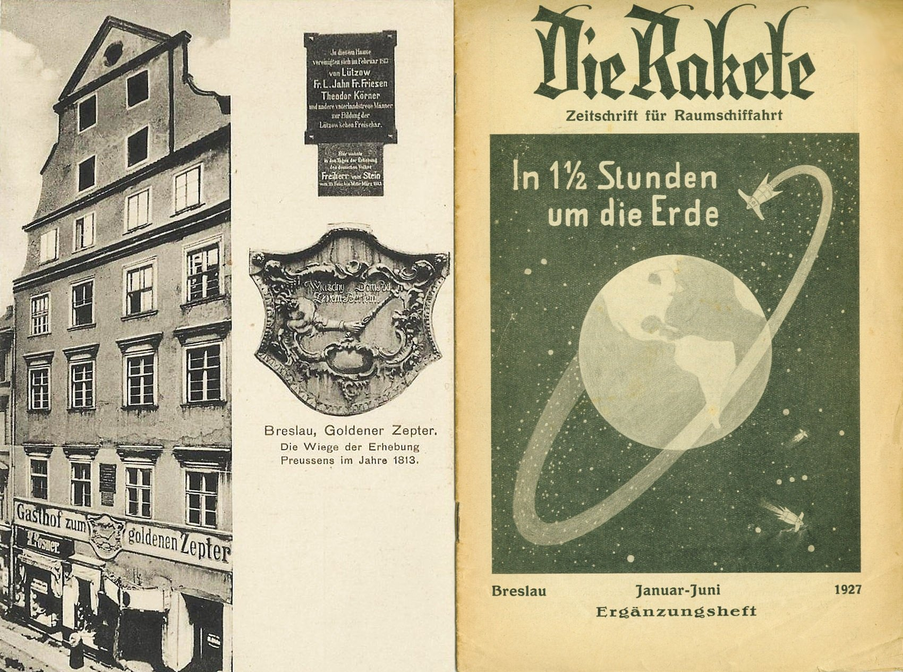

1927 → 2027 · 100 LAT VfR
5 lipca 1927 r. przy ul. Kuźniczej 22 powstało Verein für Raumschiffahrt (VfR) – pierwsza organizacja tego typu na świecie, której członkowie utorowali drogę na Księżyc.
1827 → 2027 · 200 LAT CHLADNIEGO
Dokładnie sto lat wcześniej zmarł we Wrocławiu wybitny badacz Ernst Chladni, ojciec meteorytyki, który jako pierwszy udowodnił kosmiczne pochodzenie meteorytów.
Co chcemy osiągnąć w 2027 roku?
- Uchwałę Rady Miejskiej w sprawie ustanowienia roku rocznicowego.
- Zorganizowanie konferencji w stulecie powstania VfR.
- Trwałe upamiętnienie rocznic w przestrzeni miasta.
- Wydarzenia popularnonaukowe i edukacyjne we Wrocławiu.